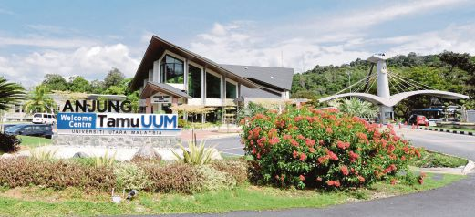
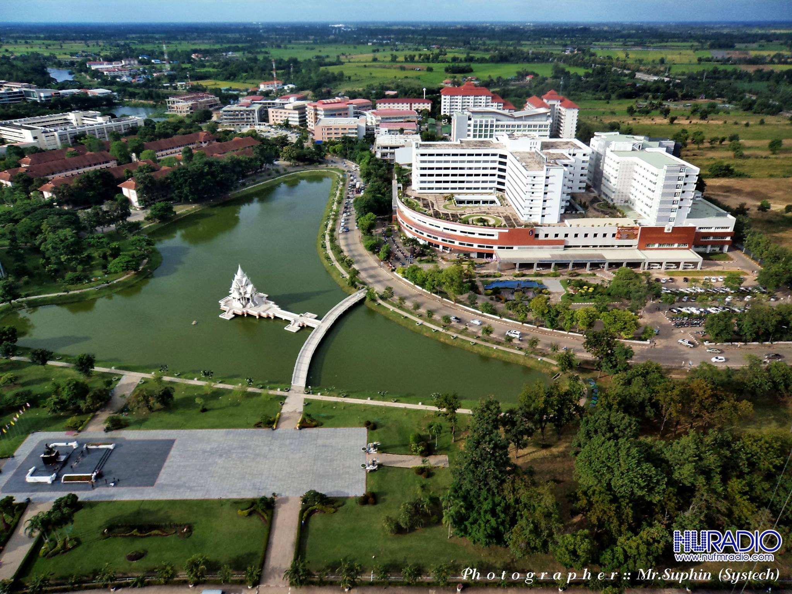
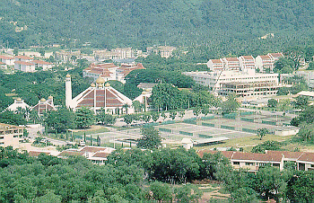
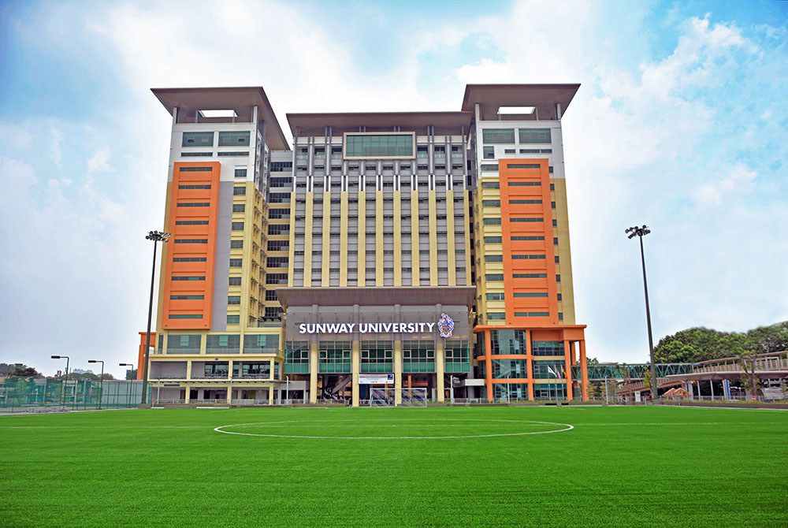

الجامعات المعترف بها في ماليزيا

جامعة اوتارا
تحقيق التفوق الأكاديمي في مجالات إدارة الأعمال، والتعليم، وتكنولوجيا المعلومات، وإدارة الجودة. يقع الحرم الجامعي بالقرب من بوكيت كايو هيتام، وهي بلدة صغيرة على الحدود التايلاندية الماليزية. الجامعة تضم كلية الآداب والعلوم، وكلية الأعمال التجارية والقانون ودراسات الحكومة والدراسات الدولية. كما تقدم البرامج الدراسية على المستويات الجامعية و مستوى الدراسات العليا

جامعة بوترا
عرفت بانها واحد من الجامعات الرائدة في مجال البحث العلمي في ماليزيا. وأسست عام 1931 كالكلية الزراعية، تقع في شبه الجزيرة الماليزية بالقرب من العاصمة كوالالمبور وبجانب العاصمة الإدارية لماليزيا بوتراجاي. صنفت بالمركز 376 بين أفضل جامعات العالم عام 2014 بواسطة QS [2]، وفي عام 2015 صنفت جامعة بوترا بالمركز الخامس والأربعين من أفضل الجامعات بالعالم

سينز ماليزيا
الجامعة تقدم دورات دراسية على المستوى الجامعي ومستوى الدراسات العليا لحوالي 20000 طالب. مجموع البرامج الدراسية، 111برنامج دراسى أكاديمى بدوام كامل، و72 برنامج دراسى للتعلم عن بعد. الجامعة تعمل عبر ثلاثة فروع جامعية الحرم الجامعي الرئيسي في بينانج، والحرم الجامعي في سيري امبانجان الحرم الجامعي في كوبانج كيريان ويقدم دورات دراسية في العلوم الصحية
UTHM جامعه
تعد جامعة يونتين تناجا في ماليزيا من أفضل الجامعات الماليزية لدراسة الهندسة والتكنولوجيا وصنفت بالمرتبة 255 عالمياً لسنة 2018 تعتمد البرامج الدراسية في جامعة UNITEN ماليزيا على مناهج عالمية رصينة ومكثفة بالتعاون مع منظمة الجودة الماليزية MQA

Sunway جامعه
تستقبل الجامعة طلابًا من أكثر من 90 دولة، من خلال جميع برامجها المعتمدة التي تدرس باللغة الإنجليزية، وهي جامعة عالمية حاصلة على تصنيف 5 نجوم من هيئة المؤهلات الماليزية بالإضافة إلى تصنيف 5 نجوم في تقييم QS للجامعات العالمية في مجال التدريس والتوظيف والمنشآت. كما أن الجامعة تأتي أيضًا من بين أفضل 2.5% من الجامعات في آسيا (تصنيفات QS لجامعات آسيا لعام 2018)
جامعة تايلورز
تعتبر جامعة ماليزية رائدة ، ومؤسسة تعليمية متخصصة فى التعليم العالي .. الجامعة تقدم مجموعة واسعة من الشهادات المعتمدة والمعترف بها ، التى تتنوع مابين شهادات الإعداد الجامعي ، والدبلومات والدرجات الجامعية والدراسات العليا.. المقر الرئيسي للجامعة يقع فى سوبانج جايا
لوحه الاعلانات
جميع الحقوق محفوضه